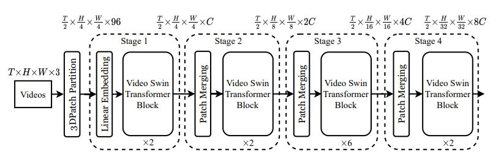

VideoSwin is a pure-transformer backbone architecture for video recognition that is found
to surpass the factorized models in efficiency. It achieves this by taking advantage of the inherent spatiotemporal locality of videos, in which pixels that are closer to each other in spatiotemporal
distance are more likely to be correlated. Because of this property, full spatiotemporal self-attention
can be well-approximated by self-attention computed locally, at a significant saving in computation
and model size. The approach is implemented through an adaptation of the Swin Transformer.
More details can be found
here.

Overall architecture of Video Swin Transformer (tiny version, referred to as Swin-T).